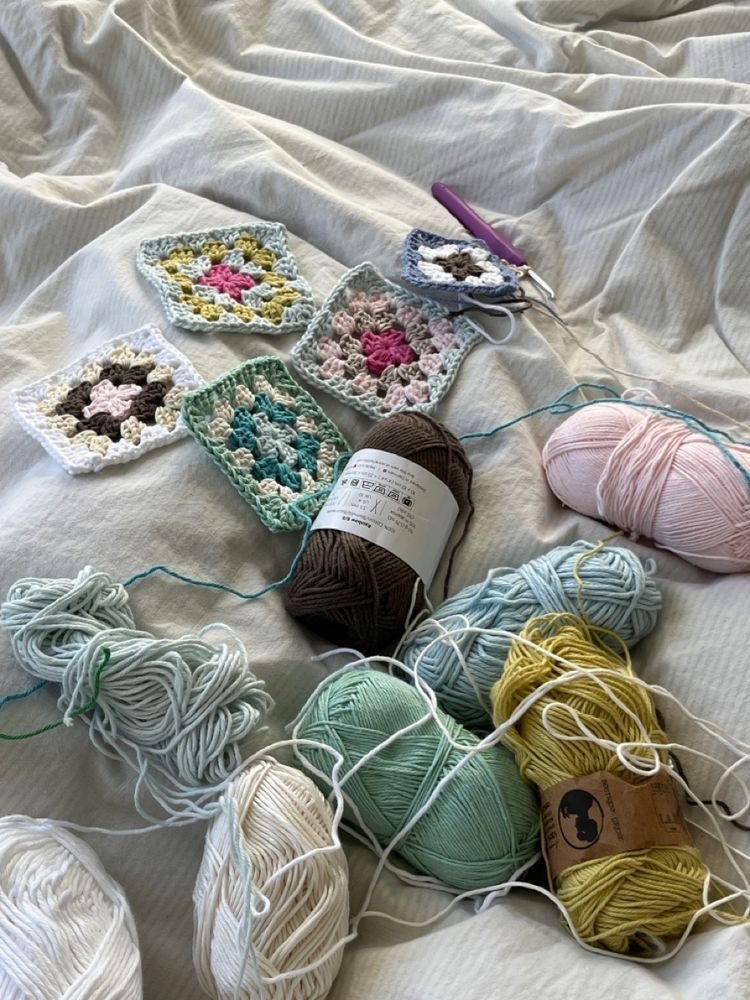

Hello! Celia here.
📍Bristol, EnglandFor those who don't know me, I'm Celia from Algeria. I am a full-time student at UWEBIC in Bristol, England, studying Computer Science.
This little website is a small window into who I am outside of lectures and deadlines — the hobbies, the books, the yarn and all the things that make me, me.
🇩🇿 Arabic · Native
🇫🇷 French · Fluent
🇬🇧 English · Fluent
🇩🇿 Tamazight · Conversational
"
A reader lives a thousand lives before he dies. The man who never reads lives only one.
Quick facts about me
- Hometown: Somewhere between warm sunsets in Algiers and high mountains in Bejaia.
- Current base: Bristol — still getting used to the rain, but loving the city.
- Study mode: Full-time Computer Science student and part-time tech enthusiast.
- Fun setting: Earphones on, laptop open, hot drink and snack within arm's reach.
Reading: The Institute
Crocheting: a new project
Learning: more Piano pieces
My hobbies
| Hobby | Since | Level | Why I love it |
|---|---|---|---|
| 🎹 Piano | 5 years ago | Intermediate | Feels like I'm in another world |
| 🧶 Crochet | 3 years ago | Intermediate | Wonderfully relaxing |
| 📚 Reading | Since childhood | Expert | Exploring other universes |
Explore my world
Dive a little deeper into each corner of this site:
-

Practiced Hobbies — where I talk about the things I actually do when I'm not buried in university workload.→
Say hello
Have a book recommendation, a crochet tip, or just want to say hi? Leave me a note!